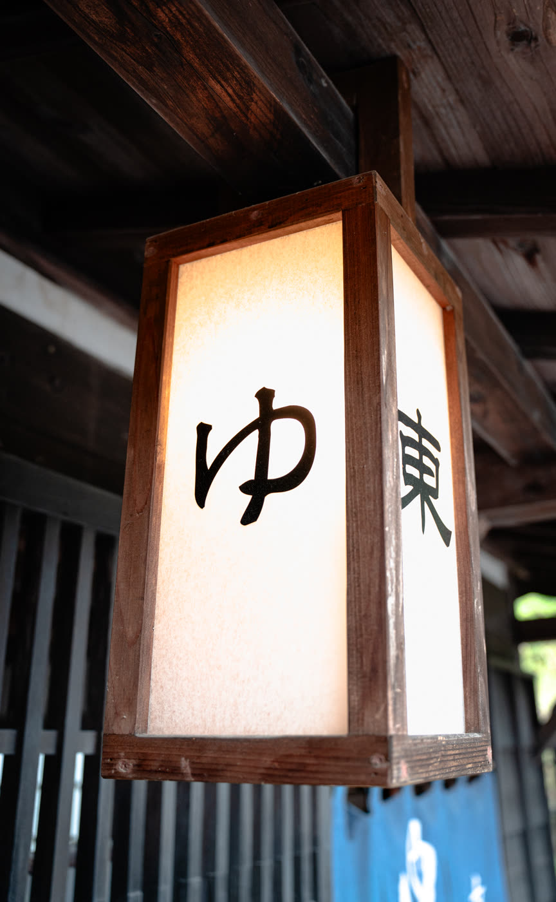
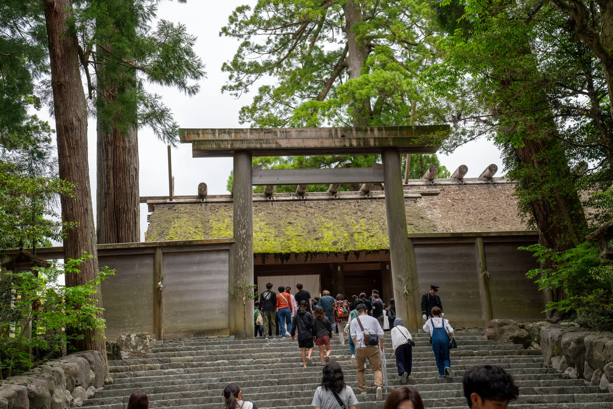

Når danskere rejser til Japan første gang, ligner ruten tit hinanden: Tokyo, Kyoto, Osaka og måske Hiroshima. Det giver god mening, men det betyder også, at store dele af landet næsten aldrig ser en udenlandsk turist. Et af de steder er Tottori, et langt og smalt præfektur ud til Det Japanske Hav, et par timer nordvest for Osaka.
Tottori har godt en halv million indbyggere, færre end Københavns Kommune, og er dermed Japans mindst befolkede præfektur. Det bliver også tit kaldt Japans mindst besøgte præfektur. Helt præcist er det ikke, men det er tæt på: I Japans officielle overnatningsstatistik for 2024 lå Tottori som nummer 46 ud af 47. Kun Tokushima på øen Shikoku havde færre overnatninger.
Hvorfor kommer så få?
En del af forklaringen er geografi. Tottori ligger i San'in, kysten på nordsiden af de bjerge, der deler det vestlige Japan, og navnet betyder bogstaveligt "bjergenes skyggeside". Her kører ingen shinkansen. Fra Osaka tager eksprestoget Super Hakuto omkring to en halv time til Tottori by, og derfra er det lokaltog og busser, der ikke kører særlig tit.
Den anden del er ry. Tottori er kendt i Japan, men mest som en joke. Mange japanere har svært ved at huske, om det er Tottori eller nabopræfekturet Shimane, der ligger længst mod vest. Tottori er vant til at blive glemt, og heldigvis har man valgt at tage det med humor.
Ingen Starbucks, men Japans største sandkasse
I mange år var Tottori det eneste præfektur i Japan uden en Starbucks. Guvernøren, Shinji Hirai, vendte det til en slags reklame: Tottori havde måske ingen sutaba (スタバ), som japanere kalder Starbucks, men det havde Japans største sunaba (砂場), sandkasse. Han mente sandklitterne ved kysten.
Ordspillet blev taget bogstaveligt, og i 2014 åbnede den lokale kaffebar Sunaba Coffee. Da den første Starbucks endelig åbnede ved Tottori Station i maj 2015, stod over 1.000 mennesker i kø.
Den samme selvironi går igen i dag. Tottori kalder sig også Hoshitori-ken (星取県), "præfekturet, der fanger stjerner". Navnet Tottori skrives 鳥取, "at fange fugle", så man har bare byttet fuglen ud med en stjerne. Navnet er fortjent: Mælkevejen kan ses fra alle præfekturets 19 kommuner, og i det japanske miljøministeriums landsdækkende måling af stjernehimlen lå Tottori flere gange nummer ét.
Sandklitterne, det nærmeste Japan kommer en ørken
Tottori-sandklitterne er præfekturets store trækplaster. De strækker sig omkring 16 kilometer langs kysten, er op til to kilometer brede og op til 50 meter høje. Den største klit i midten hedder Umanose, "hesteryggen", og fra toppen ser man ud over Det Japanske Hav. Det er ikke en ørken, der falder rigeligt med regn, men står man midt i sandet på en solskinsdag, er det svært at tro, at man er i Japan.
Et par minutters gang fra klitterne ligger Sandmuseet, verdens eneste museum for sandskulpturer. Hvert år vælger museet et nyt tema, typisk et land, og kunstnere fra hele verden bygger udstillingen op fra bunden. I 2026 er temaet Spanien, og udstillingen står frem til 3. januar 2027. Når den lukker, bliver skulpturerne til sand igen.
Japans farligste nationalskat
Inde i landet, på bjerget Mitoku, ligger det, japanerne selv kalder Japans farligste nationalskat: Nageiredo, en lille tempelhal, der står på tynde træpæle i en lodret klippevæg. Hallen hører til templet Sanbutsuji, som ifølge traditionen blev grundlagt i år 706. Hvordan den kom derop, ved ingen med sikkerhed. Legenden siger, at bjergmunken En no Gyōja kastede hele bygningen op i klippen med sine overnaturlige kræfter, og derfra har den sit navn: nageire betyder "kastet ind".
Vejen derop er mere klatring end vandretur, med trærødder, kæder og stejle klippestykker. Man må ikke gå alene, kun i grupper på mindst to, og ved indgangen tjekker templet ens sko. Er de ikke gode nok, må man købe et par stråsandaler. Turen tager halvanden til to timer frem og tilbage.
For bjergmunkene var turen en del af træningen. De stejle stier skulle rense sanserne, og bagefter kunne kroppen komme sig i de varme kilder nede i dalen. Den kombination er i dag udpeget som japansk kulturarv med en undertitel, der frit oversat lyder "Japans farligste nationalskat og en af verdens stærkeste radonkilder".
Misasa, badet med de tre morgener
Den radonkilde ligger i Misasa, en lille by med onsen (温泉), varme kilder, langs en flod ved foden af Mitoku. Vandet her har et af verdens højeste indhold af radon, og japanerne har badet i det i over 850 år. Man bader i det, drikker det og indånder dampen, som ifølge traditionen er godt for helbredet.

Navnet Misasa betyder "tre morgener", og ifølge legenden forsvinder alle dine sorger, hvis du bader tre morgener i træk. Byen er fuld af gamle træbygninger og ryokan, og der er gratis fodbade langs floden. Er du ny i japanske bade, kan du læse om skikkene i Onsen i Japan, reglerne ingen fortæller dig.
Yokai og detektiver
Tottori har fostret to af Japans mest kendte mangategnere, og det kan man ikke undgå at se.
Shigeru Mizuki, der tegnede GeGeGe no Kitarō om yokai (妖怪), de overnaturlige væsner fra japansk folketro, voksede op i havnebyen Sakaiminato. Fra stationen løber Mizuki Shigeru Road, omkring 800 meter gade med 177 bronzefigurer af yokai. Selv togene derud er malet med figurerne, og lufthavnen i nabobyen hedder Yonago Kitaro Airport.
Gosho Aoyama, som står bag Detektiv Conan, er fra Hokuei midt i præfekturet. Her ligger hans museum, Gosho Aoyama Manga Factory, med en kopi af det kontor, hvor serien blev til, og den lokale station bliver kaldt Conan-stationen. Lufthavnen i Tottori by hedder Tottori Sakyu Conan Airport. Begge præfekturets lufthavne er altså opkaldt efter mangafigurer.
Mere at se i Tottori
Daisen
Med sine 1.729 meter er Daisen det højeste bjerg i det vestlige Honshu. Set fra vest ligner det Fuji, og derfor bliver det også kaldt Hōki-Fuji efter den gamle provins, det ligger i. Om sommeren vandrer man op, om vinteren står man på ski, og på skråningen ligger det gamle tempel Daisen-ji.
Kurayoshi
Midt i præfekturet ligger den gamle købmandsby Kurayoshi, hvor hvide pakhuse med sorte træpaneler og røde tegltage står side om side langs en smal kanal. Mange af dem er i dag caféer, butikker og små værksteder.
Uradome-kysten
Øst for sandklitterne bliver kysten til klippeøer, grotter og turkisblåt vand. Uradome-kysten er en del af San'in Kaigan, en UNESCO Global Geopark, og ses bedst fra en af de små både, der sejler ind mellem klipperne.
Hakuto-helligdommen

Ved kysten vest for centrum af Tottori by ligger Hakuto-helligdommen, hvor en af Japans ældste myter foregår. Ifølge Kojiki, Japans ældste krønike fra 712, narrede en hvid hare en række hajer til at danne en bro over havet, men blev flået, da den pralede af det. Guden Ōkuninushi hjalp haren, og i dag er helligdommen et sted, hvor man beder om held i kærlighed. Området er fyldt med små figurer af hvide harer.
Krabbe om vinteren, pærer om efteråret
Tottori er et af de steder, hvor sæsonen bestemmer menuen. Om vinteren er det matsuba-gani (松葉ガニ), snekrabbe fra Det Japanske Hav, som japanere rejser langt for at spise. Sidst på sommeren og i september er det nijusseiki nashi (二十世紀梨), "det 20. århundredes pære", en sprød og saftig japansk pære, som Tottori er kendt for i hele landet. Pærens blomst er endda præfekturets officielle blomst.
Ofte stillede spørgsmål om Tottori
Er Tottori Japans mindst besøgte præfektur?
Næsten. I Japans officielle overnatningsstatistik for 2024 lå Tottori som nummer 46 ud af 47, og kun Tokushima havde færre overnatninger. Tottori er til gengæld Japans mindst befolkede præfektur.
Hvad er Tottori kendt for?
Mest for sandklitterne, Japans største. Derudover for templet Nageiredo, radonkilderne i Misasa, snekrabbe om vinteren og for at være hjemsted for tegnerne bag GeGeGe no Kitarō og Detektiv Conan.
Er Tottori-sandklitterne en ørken?
Nej. Det er kystklitter, og der falder rigeligt med regn. Men med omkring 16 kilometer sand langs kysten og klitter på op til 50 meter er det det nærmeste, Japan kommer en ørken.
Hvordan kommer man til Tottori?
Med fly fra Tokyo Haneda til Tottori eller Yonago på lidt over en time, eller med eksprestoget Super Hakuto fra Osaka på omkring to en halv time. Der kører ingen shinkansen til Tottori.
Tottori uden at gætte
Det, der gør Tottori roligt, gør det også svært at rejse i. Togene går sjældent, busserne til seværdighederne kører efter en køreplan, der er let at misse, og flere af de små ryokan i Misasa tager kun imod reservationer på japansk. I en Rejseplan + booking lægger jeg en dag-for-dag plan, der binder transporten sammen, og booker overnatningerne for dig, så du kan få sandklitterne og badet helt for dig selv.
Nogle spørgsmål til Tottori?
Udfyld følgende, så vender jeg tilbage hurtigst muligt.
Tak! Jeg har modtaget din besked og vender tilbage hurtigst muligt.
Læs også
Kilder
- Tottori Prefecture, Wikipedia
- 宿泊旅行統計調査, Japan Tourism Agency (japansk)
- 宿泊者数が多い都道府県ランキング, 政策AI (japansk)
- Starbucks comes to Tottori, SoraNews24
- CATCH the STAR 星取県, Tottori Prefecture (japansk)
- Sand Dunes (Tottori Sakyu), japan-guide.com
- Conquer Japan's most dangerous National Treasure, National Parks of Japan
- 六根清浄と六感治癒の地, Japan Heritage (japansk)
- Misasa Onsen, Japan National Tourism Organization
- Mizuki Shigeru Road, ANA Japan Travel Planner
- Gosho Aoyama Manga Factory, Japan Travel
- White Hare of Inaba, Wikipedia
Følg Kantan for mere om Japan